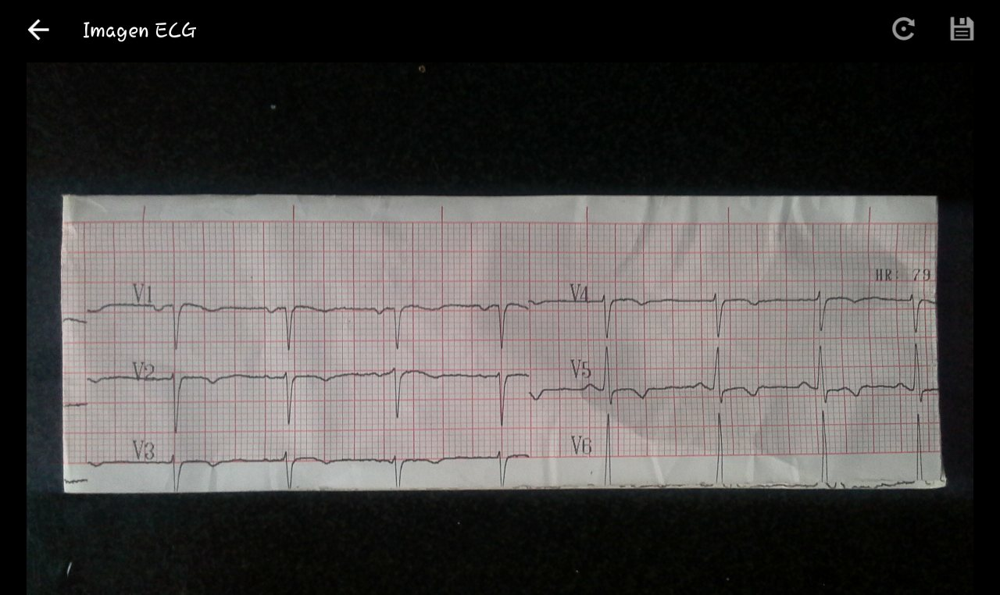
A Service to Digitize ECG Strips
Every electrocardiogram (ECG) machine in routine clinical use does the same thing with its result: it prints it on a strip of paper. The waveform that follows is proof — a cardiologist can read it, but a computer can't, and the reading is stuck on that one piece of paper forever unless someone re-measures it by hand with a ruler. This is an undergraduate thesis project (Universidad Simón Bolívar, Ingeniería Electrónica, defended May 2018, advised by Prof. Masun Homsi) built with Emanuel Sánchez to close that gap: a photo of a printed 12-lead ECG goes in, and a calibrated millivolts-vs-milliseconds signal comes out — exportable as JSON, WFDB, MATLAB, or the FDA-backed HL7 annotated-ECG (aECG) XML standard used in clinical trials.
The project has three parts that all shipped together: a Python/OpenCV image-processing pipeline that does the actual digitization, a Node.js RESTful API that exposes it to the world with user accounts and a MongoDB-backed job queue, and a companion Android app that lets a patient photograph their own ECG strip, watch it get processed, and pull up the resulting waveform on their phone.
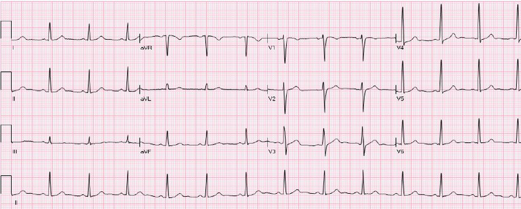
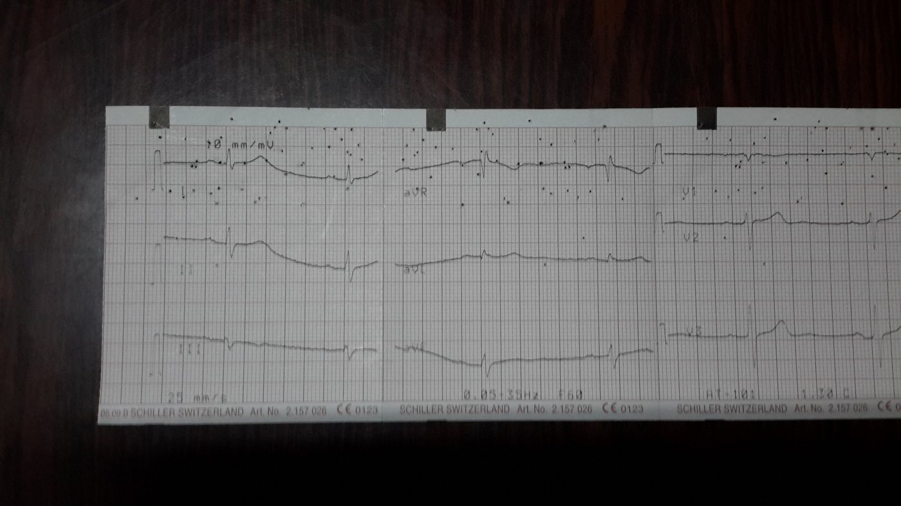
The two kinds of input the pipeline had to handle: a clean scan (left) and an uncontrolled phone photo (right).
A Very Short ECG Primer
A standard resting ECG records 12 different views ("leads") of the heart's electrical activity from combinations of electrodes on the limbs and chest, and prints them on grid paper where 1 small square = 40 ms horizontally and 100 µV vertically. That grid calibration is exactly what makes digitization possible: if you can find the grid, you can convert pixels back into real units.
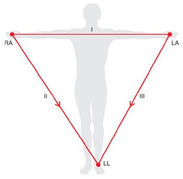
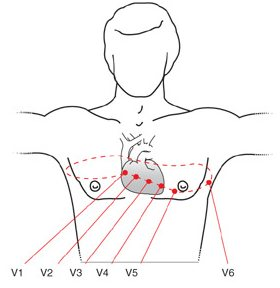
The bipolar limb leads I/II/III plus augmented aVR/aVL/aVF (left), and the six precordial chest leads V1–V6 (right).
The pipeline targets the printout convention most machines default to: a 4×4 grid — row 1: I, aVR, V1, V4; row 2: II, aVL, V2, V5; row 3: III, aVF, V3, V6; row 4: an extended single-lead rhythm strip (usually lead II) — which is also why lead II ends up being the one the thesis analyzes in full depth.
Two Test Datasets, on Purpose
Two datasets were built specifically to separate two very different failure modes:
| Dataset | Source | Size | Purpose |
|---|---|---|---|
| Database 1 | Web-collected scanned ECG images | 107 collected → 54 kept (right grid spec + 4×4 layout), avg. ~1200×640 px | Already flat — used to evaluate segmentation and signal extraction in isolation |
| Database 2 | Self-captured phone photos | 10 images, uncontrolled angle & lighting | The only dataset that can test perspective correction |
System Architecture
The three pieces talk over a JSON/multipart REST API; the heavy image processing runs in Python and is invoked from the Node service via python-shell rather than being reimplemented in JavaScript.
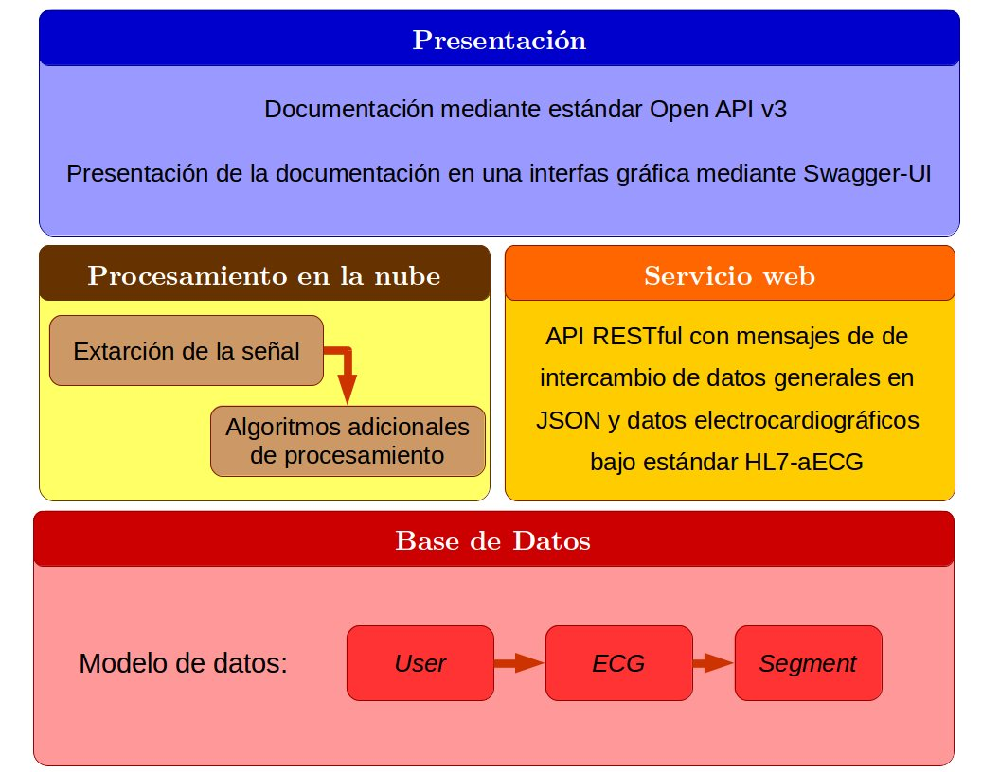
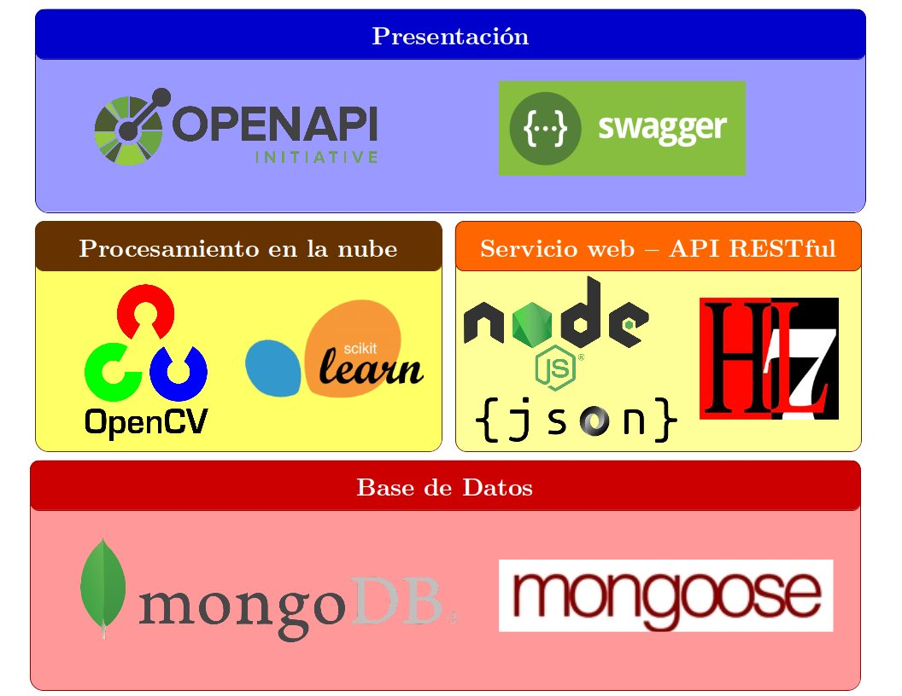
Service layers and the concrete tools behind each one.
| Layer | Choice | Why |
|---|---|---|
| API style | REST over SOAP/WSDL | The thesis cites Fielding's 2000 dissertation directly; REST's stateless, resource-based model was judged a better fit than SOAP's contract-heavy tooling for a service this size |
| Backend runtime | Node.js 8.11.1 over Java | A cited PayPal benchmark showed roughly 2× requests/sec and 35% lower response time versus an equivalent Java app |
| Backend modules | express, mongoose, passport, jsonwebtoken, bcrypt, multer, body-parser, python-shell, rotating-file-stream | Routing, MongoDB ODM, auth strategies, JWT issuing, password hashing, multipart uploads, calling into Python, and weekly-rotated access/error logs |
| Database | MongoDB + Mongoose | Document storage suited the variable, nested shape of an ECG job (segments, leads, processing state) better than a fixed relational schema |
| Image processing | Python: OpenCV, NumPy, SciPy, Pandas, scikit-learn, WFDB | OpenCV alone exposes 500+ ready-made CV primitives; scikit-learn's clustering and WFDB's export routines were reused rather than rewritten |
| API docs | OpenAPI v3 + Swagger UI, served at /api-docs | Interactive, testable documentation instead of a static spec |
| Push notifications | Firebase Cloud Messaging | Digitization is asynchronous; FCM tells the phone the moment a result is ready instead of polling |
Auth is stateless: bcrypt (cost factor 10, random salt) hashes passwords, and a signed JWT — its payload additionally protected with SHA-256 and a server secret — travels in an x-api-key header on every subsequent request.
The Digitization Pipeline
This is the core of the thesis: turning a photograph of a paper ECG into a clean, calibrated signal. It runs in three stages.
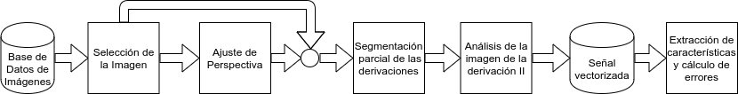
Top-level flow: acquire → correct perspective (phone photos only) → segment into the four lead-rows → extract & calibrate the target lead.
Stage 1 — Perspective Correction
Only phone photos need this stage — scans are already flat. It assumes the paper is the largest object in frame and all four corners are visible:
- Downscale the photo to roughly 240×320 (the exact factor depends on aspect ratio) so contour-finding stays fast.
- Run Canny edge detection (thresholds 50/150) and keep the largest closed contour — that's assumed to be the paper.
- Run a Hough line transform over that contour (ρ resolution 1 px, θ resolution 1°, minimum 70 intersections per line), intersect the detected lines pairwise, and pick the four points that form the largest quadrilateral as the paper's corners.
- Scale those corner coordinates back up to the original photo resolution.
- Compute a perspective transform matrix from the four corners and warp the full-resolution image with it.
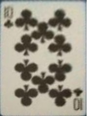
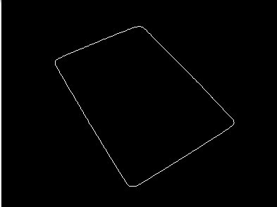
The same contour→corners logic, sanity-checked on a playing card before trusting it on paper.
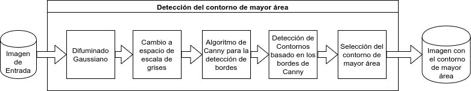
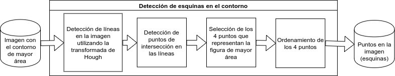
This turned out to be the weakest link in the whole pipeline: roughly half of the 10 phone photos in Database 2 failed here, mostly to uneven lighting (of the failures, 30% found no corners at all, 20% found the wrong ones). Because it's also the first stage, a bad result here poisons everything downstream with no fallback — which is why the accuracy numbers further down were only measured on the already-flat Database 1.
Stage 2 — Splitting the Four Lead Rows
A flat 4×4 image is next split into its four row-groups (and the row-4 rhythm strip is set aside for full analysis). Two independent signals are combined to find the row boundaries:
- Color clustering — pixels are grouped into 3 clusters in RGB space (a K-means-style "K-Vecinos" pass), producing binary masks for signal, grid and background. The cluster with the fewest pixels is assumed to be the trace; the one with the most, the background; the rest, the grid.
- Entropy filtering — local image entropy is computed with a radius-7 disk structuring element; a histogram of entropy values is bucketed, and everything past the highest-density bucket is thresholded away (the grid tends to read as higher-entropy than the signal at this stage).
The normalized row-sums of the color mask and the entropy mask are added together; the four largest peaks in that combined curve mark the centers of the four lead rows, and the nearest local minima on each side (via the first derivative) mark where to cut.
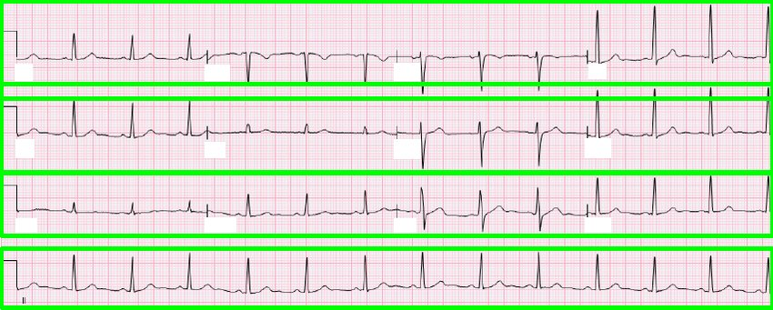
The four rows located and boxed off.
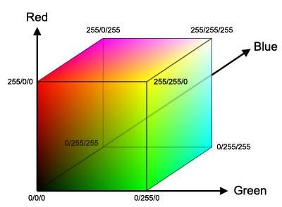
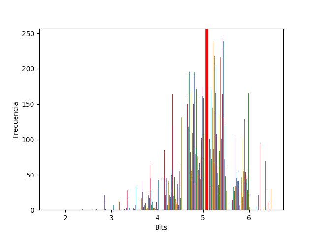
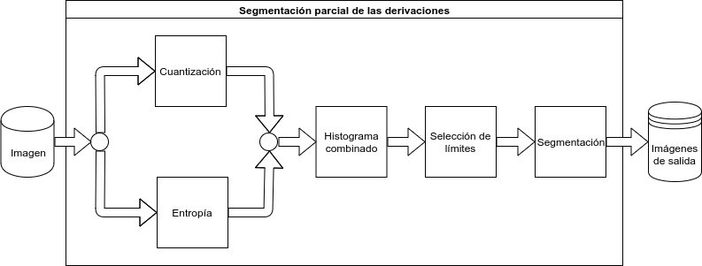
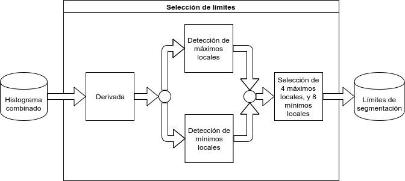
Combining color and entropy clearly beats either alone at this stage: row-boundary accuracy was 48.1% with color only, 63.0% with entropy only, and the two together landed at 61.1% — a large jump over color alone, though roughly a wash against entropy on its own. For the narrower job of separating lead II specifically, the combination did win outright: 85.2% (color), 83.3% (entropy), 90.7% combined — the version actually carried forward.
Stage 3 — Extracting and Calibrating the Signal
The same 3-cluster/entropy pass is repeated at the single-lead crop scale (the earlier row-scale masks are too coarse to trace a single line reliably). From there:
- Minimum-distance-between-points tracking: scanning column by column, pixels within 1 px of each other are grouped, and each column's group is chosen by proximity to the group picked in the previous column — a simple nearest-neighbor trace. This runs twice, left-to-right and right-to-left, and the two passes are XOR'd: columns that agree both ways become "definitive"; ambiguous columns are resolved against the nearest definitive ones. The very first column (no history yet) picks whichever group sits closest to the row with the most signal pixels overall.
- One pixel per column: within the winning group, the point farthest from that central row is kept — which is what correctly captures the tip of a QRS spike instead of clipping it.
- Grid calibration: a second, more permissive Hough transform (ρ=1 px, θ=1°, 0–1 minimum intersections) finds the grid lines themselves — horizontal near θ∈[89°,91°], vertical near θ≈0°/180° — and a histogram of the spacing between consecutive lines gives the pixel size of one grid square in each direction.
- Unit conversion: the pixel-space point vector is rescaled into millivolts vs. milliseconds using that calibration and the standard 40 ms / 100 µV grid spec.
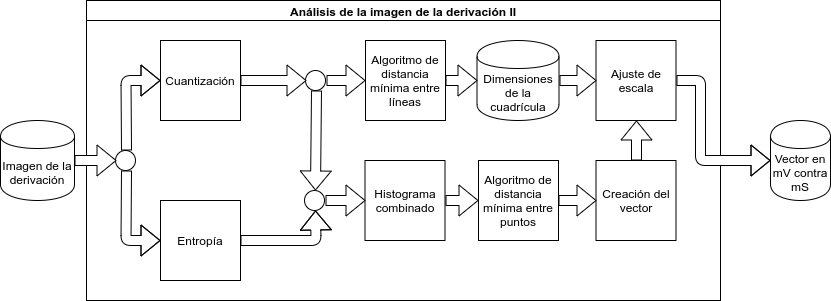
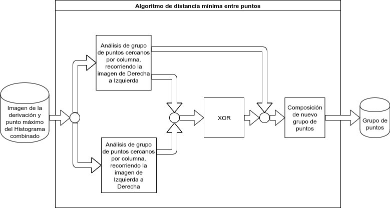
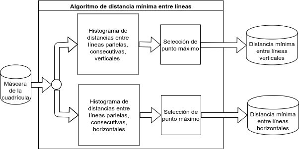
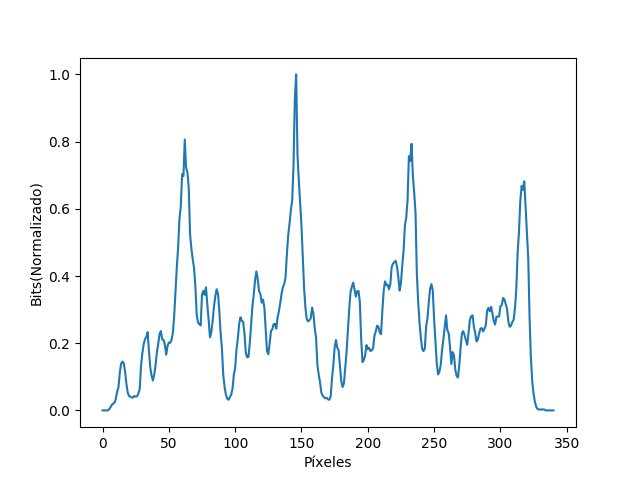
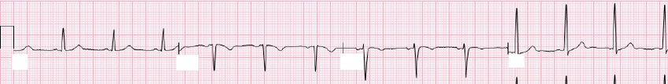
The end product of the pipeline: a calibrated, plottable signal.
Grid calibration turned out uneven — correct to within 1 px on width in 59.3% of images but on height in only 33.3% (RMSE 0.407 vs. 1.111 grid squares), which the thesis flags as a real weak point, since height error propagates directly into amplitude error.
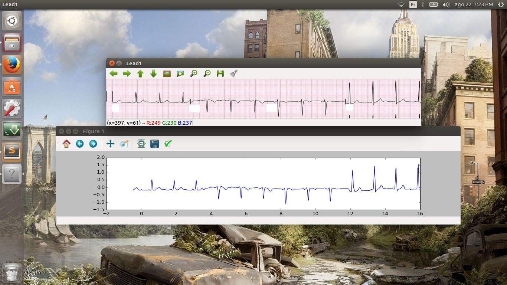
The debug tooling used while developing the extraction stage — an OpenCV image viewer next to the equivalent Matplotlib plot.
The REST API
Everything is under /api-v1 and returns JSON with a success flag (except binary/XML result downloads):
| Endpoint | What it does |
|---|---|
POST /auth/register | Create an account (email, name, password) |
POST /auth/login | Returns a signed JWT + user object |
POST /user/{userId}/ecg | Upload an ECG image (multipart) for digitization, optionally with an FCM token for a push notification on completion |
GET /user/{userId}/ecg | List a user's submitted ECG jobs |
GET /user/{userId}/ecg/{ecgId}?format= | Fetch a result as JSON, HL7-aECG, MATLAB (.m) or WFDB — returns 409 while still processing |
POST /user/{userId}/ecg/{ecgId}/preprocessed | Attach an already perspective-corrected image (e.g. corrected client-side by the app) |
POST /user/{userId}/ecg/{ecgId}/segmented | Attach an already-segmented single lead, skipping straight to Stage 3 |
DELETE /user/{userId}/ecg/{ecgId} | Delete a job and its stored files |
The staged-upload endpoints (/preprocessed, /segmented) exist so a thinner client — or a different app entirely — can do part of the pipeline locally and only hand the server what it can't do itself.
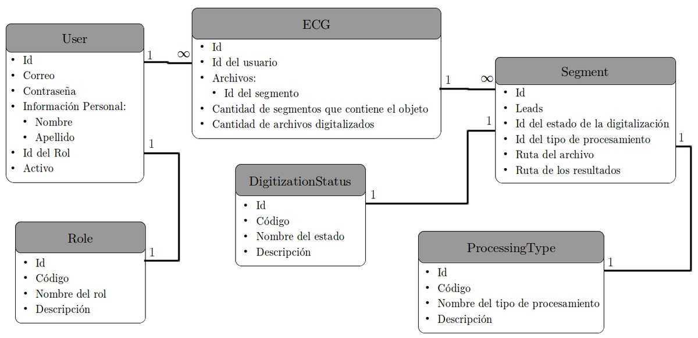
The MongoDB collections behind the API: a User owns ECG jobs, each made of Segments tagged with a lead, a DigitizationStatus (raw/preprocessed/segmented/digitized) and a ProcessingType.
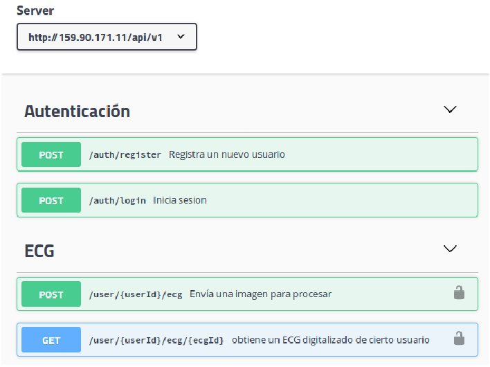
Interactive API docs, generated straight from the OpenAPI v3 spec.
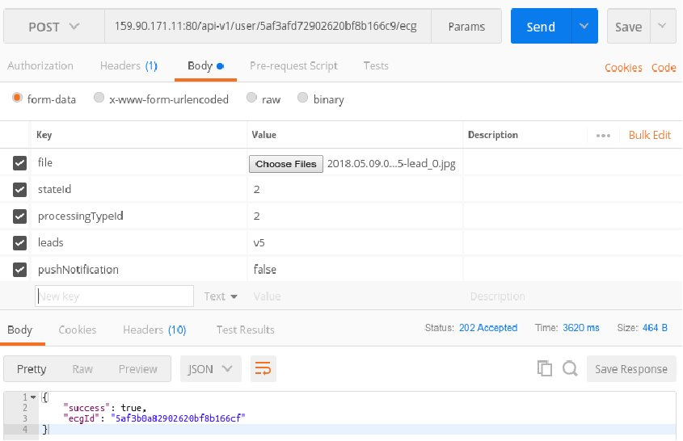
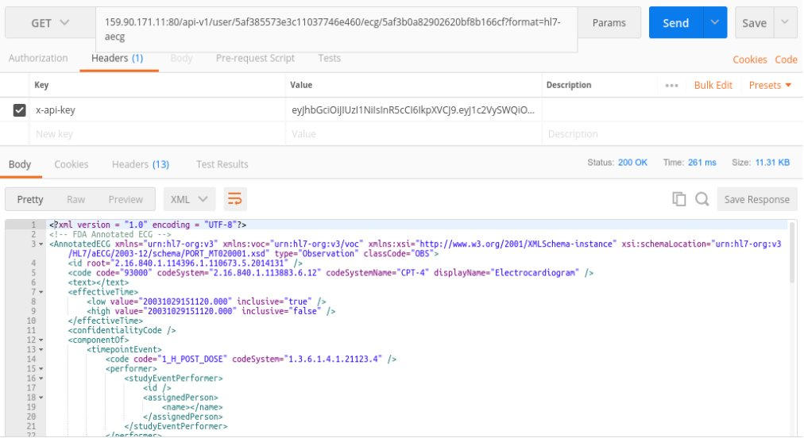
Submitting an image for digitization, and pulling the result back out as HL7-aECG XML.
The Android App
The mobile client wraps the whole API behind a reusable API-client class, targets API 16+, and mirrors the server-side pipeline locally with OpenCV4Android for the parts a phone can do on its own.
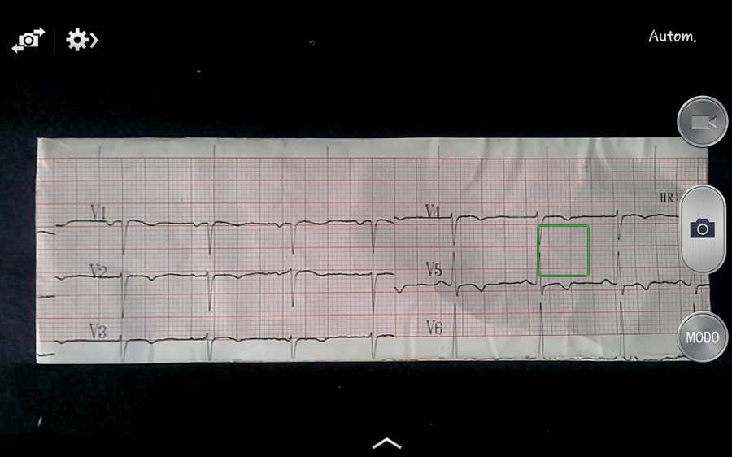
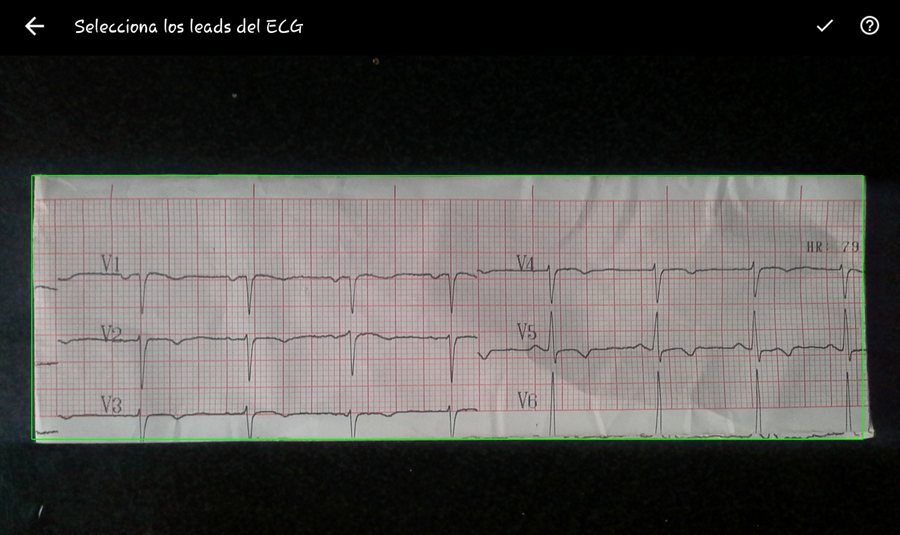
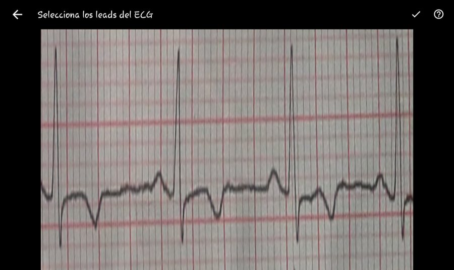
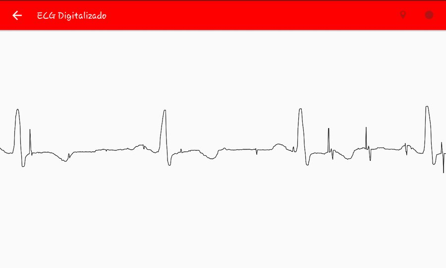
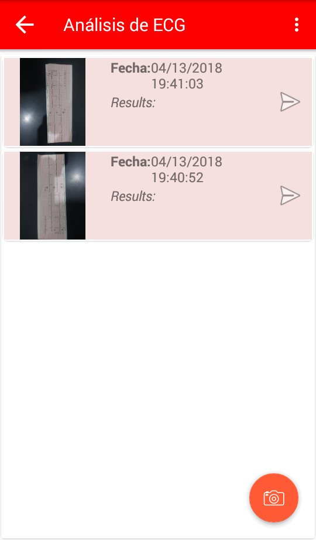
Login → capture → leaf detection → manual lead selection → interactive result chart → exam history.
Login is optional — you can continue as a guest, you just don't get your results saved. Once a photo is captured, the app runs the same contour/corner homography as Stage 1 locally (via OpenCV4Android) to flag the detected sheet outline in green; the user then drags a resizable rectangle over the lead they want digitized before the crop is uploaded. A RegistrationIntentService keeps the device's FCM token fresh with the server, and a FirebaseMessagingService listener fires a local notification — and immediately fetches the JSON result — the moment the server finishes processing. Results render in MPAndroidChart, with pinch-zoom and pan over the mV-vs-ms trace.
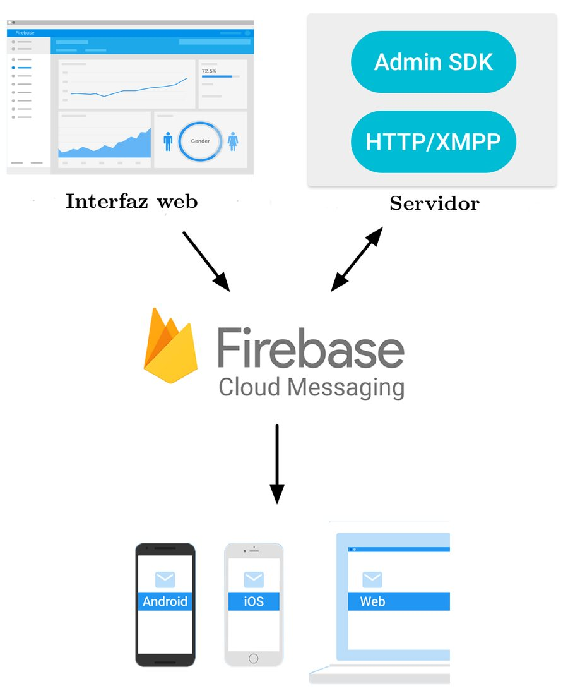
How a finished digitization reaches the phone without polling.
Project Methodology
The service and app were built with SCRUM — a backlog of requirements broken into sprints, each aiming to ship a genuinely usable increment.
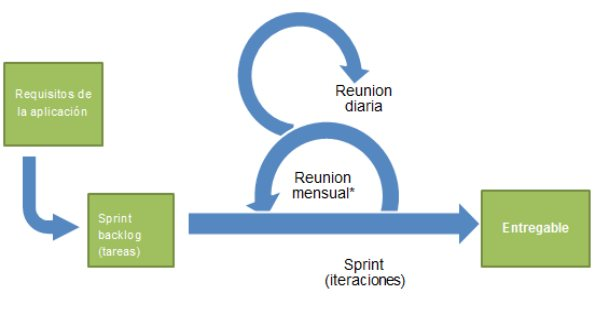
Results
Digitization Accuracy
Measured on Database 1's 54 images (perspective correction on Database 2's phone photos failed too often — about half — to build a fair accuracy number on, so later stages were only scored on already-flat scans):
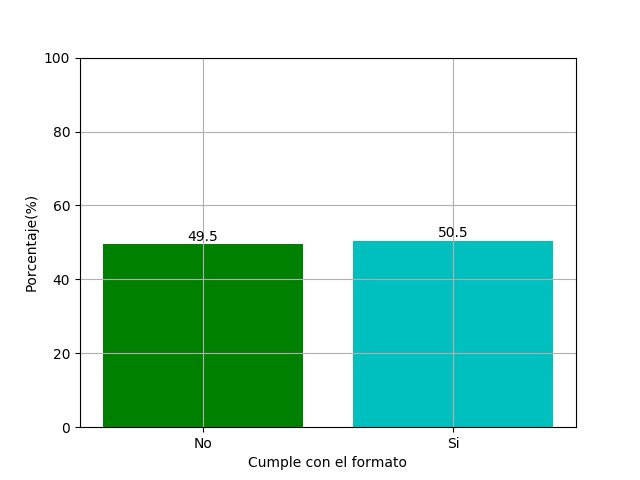
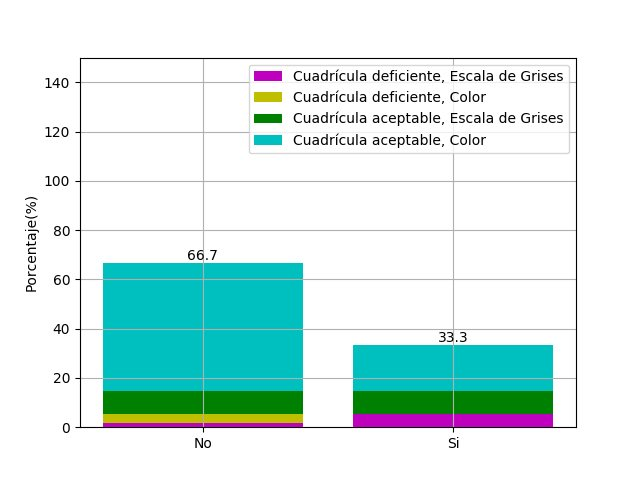
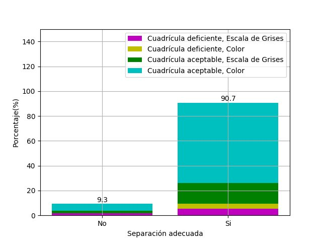
| Stage | Result |
|---|---|
| Signal/grid/background clustering (RGB-distance-from-origin criterion) | 98.1% correct (53/54) |
| Same, but classified by pixel-percentage instead | 88.9% correct (48/54) — and confused grid with background 9.3% of the time, vs. 0% for the distance criterion |
| Entropy filtering removing genuine signal pixels | happened in 40.7% of images at row-segmentation scale, but only 1.9% at the single-lead re-analysis scale |
| Row-boundary selection | 48.1% color only · 63.0% entropy only · 61.1% combined |
| Lead-II separation | 85.2% color only · 83.3% entropy only · 90.7% combined (the version used downstream) |
| Point-selection quality | 48.1% of images kept under 150 erroneous pixels in the final traced vector |
| Grid-size detection (±1px) | width 59.3% (RMSE 0.407 squares) · height 33.3% (RMSE 1.111 squares) |
| Overall end-to-end accuracy | 39% (21/54) — correct grid size and under 150 erroneous points |
| Heart-rate estimate vs. manual reference | RMSE 11,239.6 bpm² (1–193 bpm spread) — not usable for pathology detection as-is |
Two consistent findings across all of this: identifying regions by distance from the RGB origin clearly beats classifying by raw pixel percentage, and combining color and entropy clearly beats using either alone for segmentation. Also worth noting: accuracy held up similarly whether the source printout was in color or grayscale, so the pipeline doesn't quietly depend on colored ink.
Load Testing
The API was load-tested with Artillery against a modest test server (2× Intel Xeon @3.20GHz, 4GB RAM, Ubuntu Server 16.04), sustaining about 1 request/second per virtual user for one minute per tier:
| Concurrent users | Sessions | Completed | Error rate | Responses/sec |
|---|---|---|---|---|
| 20 | 1,200 | 1,200 | 0% | 19.85 |
| 50 | 3,000 | 2,667 | 11.1% | 14.74 |
| 100 | 6,000 | 3,975 | 33.8% | 26.17 |
| 150 | 9,000 | 3,180 | 64.7% | 37.4 |
The service handled 20 concurrent users cleanly (0% errors), stayed reasonably usable at 50 (~89% success), and degraded sharply past that on this single, unscaled instance — the recommendations section below is mostly about fixing exactly that.
Limitations
- At 39% end-to-end accuracy, this is a research prototype, not a clinically reliable digitizer — it was never claimed to be one.
- There was no independently-verified ground truth to compare against; heart-rate and grid-size references were themselves measured by hand, which puts a human-error floor under every accuracy number above.
- Perspective correction — the very first stage — is also the least reliable one, and a failure there has no fallback; it just blocks the rest of the pipeline.
- Lighting normalization was never solved; most of the phone-photo failures trace back to it.
- Grid-height detection and the point-selection step are the weakest individual links, and they're exactly what feeds the poor heart-rate estimate.
Future Work & Recommendations
From the thesis's own future-work list
- A web app and an iOS app, alongside the existing Android client
- Pathology-detection algorithms built on top of the extracted signal
- A real deployment inside a clinical/telemedicine setting
- Support for other grid-paper signal types beyond ECG
- A dedicated shadow-removal preprocessing stage
- Automating per-lead segmentation (today it's a manual rectangle in the app)
- Better entropy-threshold selection to keep more real signal while still clearing the grid
Recommendations for the service itself
- Scale out with a load balancer / server cluster, or a job queue, to survive the 100–150 concurrent-user range
- Test the Android app across more API levels (only 4.3/4.4 were verified)
- Extend the data model toward EMR (Electronic Medical Record) compatibility
- Add doctor-facing feedback/consultation features
Posted In:
Computer Vision